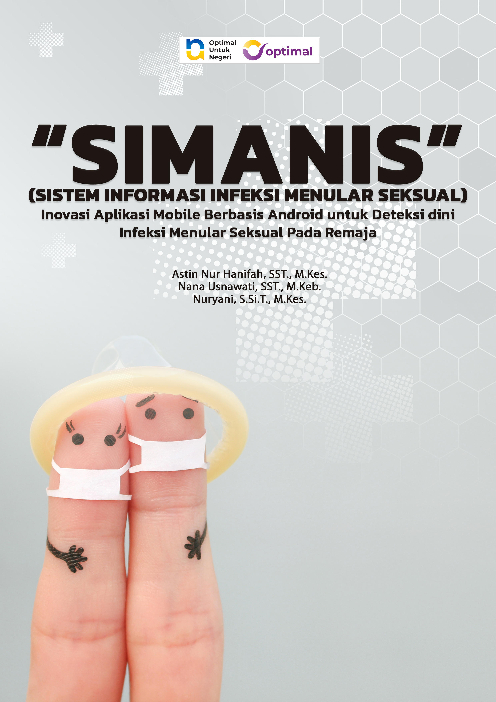

ISBN : 978-634-7294-97-5
“SIMANIS” (SISTEM INFORMASI INFEKSI MENULAR SEKSUAL): Inovasi Aplikasi
Mobile Berbasis Android untuk Deteksi Dini Infeksi Menular Seksual pada
Remaja
Buku ini hadir sebagai jawaban atas meningkatnya angka kejadian Infeksi
Menular Seksual (IMS), khususnya di kalangan remaja, yang sering kali tidak disadari
akibat kurangnya pengetahuan, sikap, dan keterampilan dalam menjaga kesehatan
reproduksi. Melalui inovasi digital bernama SIMANIS, sebuah aplikasi mobile berbasis
Android, deteksi dini IMS dapat dilakukan dengan lebih mudah, cepat, dan akurat,
sekaligus memberikan edukasi yang relevan sesuai kebutuhan remaja masa kini.
Bab I mengantarkan pembaca pada latar belakang permasalahan dan urgensi
lahirnya inovasi SIMANIS. Bab II menekankan mengapa aplikasi ini menjadi kebutuhan
mendesak dalam mendukung program kesehatan nasional. Bab III memperdalam
pemahaman mengenai IMS—mulai dari konsep dasar, gejala, cara penularan, bahaya,
tipe yang umum terjadi, hingga pentingnya pemanfaatan aplikasi mobile berbasis
Android dalam pencegahannya.
Pada Bab IV, pembaca diajak memahami proses perancangan dan rancang
bangun aplikasi SIMANIS, sehingga dapat melihat secara konkret bagaimana inovasi
digital ini dikembangkan. Sementara itu, Bab V menguraikan implikasi luas
penggunaan aplikasi, mulai dari aspek kesehatan, sosial, budaya, etika, ekonomi,
hingga hukum. Pembahasan juga menyoroti efektivitas edukasi digital, peran aplikasi
dalam revolusi industri 4.0, prospek integrasi dengan kecerdasan buatan (AI), hingga
kontribusinya dalam pemberdayaan perempuan dan kesiapan masyarakat
menghadapi transformasi digital.
Bab VI menutup dengan kesimpulan yang menegaskan bahwa SIMANIS bukan
sekadar aplikasi, melainkan bagian dari ekosistem m-Health yang mampu
memperkuat sistem kesehatan nasional, meningkatkan kesadaran remaja terhadap
risiko IMS, serta menjadi model inovasi kesehatan berbasis teknologi yang
berkelanjutan.
Dengan pendekatan komprehensif yang memadukan teori, praktik, dan analisis
multidimensi, buku ini tidak hanya relevan untuk akademisi dan tenaga kesehatan,
tetapi juga bagi pembuat kebijakan, pendidik, serta masyarakat luas yang peduli
terhadap isu kesehatan remaja. SIMANIS diharapkan mampu menjadi pionir dalam
pemanfaatan teknologi digital untuk mendukung deteksi dini, edukasi, dan
pencegahan IMS di Indonesia maupun secara global.